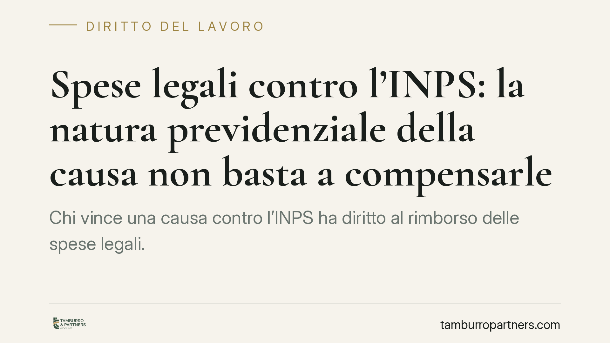

Spese legali contro l'INPS: la natura previdenziale della causa non basta a compensarle
Chi vince una causa contro l'INPS ha diritto al rimborso delle spese legali. La compensazione — cioè lasciare ciascuna parte a carico dei propri costi — non può essere disposta solo perché la controversia riguarda la previdenza. È un orientamento consolidato della Cassazione, coerente con i limiti imposti dall'art. 92 c.p.c. dopo l'intervento della Corte costituzionale.

Il principio di soccombenza e la regola generale
Il punto di partenza è l'art. 91 del codice di procedura civile: il giudice, con la sentenza che chiude il processo, condanna la parte soccombente — quella che perde — a rimborsare le spese legali alla parte vittoriosa. È il cosiddetto principio di soccombenza. Chi ha costretto l'altro a un giudizio rivelatosi fondato deve farsene carico economicamente.
Si tratta della regola, non di un'eccezione. Nelle cause previdenziali — dove il cittadino agisce per ottenere prestazioni come l'assegno di invalidità o la pensione — questo significa che l'INPS soccombente è tenuto, in linea di principio, a pagare l'intero costo del giudizio.
Quando è ammessa la compensazione
La deroga è prevista dall'art. 92, comma 2, c.p.c. Il giudice può compensare le spese — in tutto o in parte — solo in presenza di presupposti tassativi: la soccombenza reciproca (entrambe le parti vincono e perdono su punti diversi), l'assoluta novità della questione trattata o il mutamento della giurisprudenza su questioni dirimenti.
La formulazione attuale della norma è il frutto di un intervento della Corte costituzionale. Con la sentenza n. 77 del 2018 la Consulta ha dichiarato l'illegittimità dell'art. 92, comma 2, c.p.c. nella parte in cui non prevedeva la possibilità di compensare le spese anche in presenza di gravi ed eccezionali ragioni ulteriori, analoghe a quelle tipizzate. L'effetto è stato additivo: ha ampliato i margini del giudice, ma senza trasformare la compensazione in una scelta libera e immotivata.
Qui sta il nodo. La natura previdenziale della lite non rientra tra i presupposti dell'art. 92, comma 2. Non è una «grave ed eccezionale ragione» di per sé: è la materia stessa del contendere. Disporre la compensazione limitandosi a osservare che «si tratta di una causa previdenziale» equivale a svuotare il principio di soccombenza e a comprimere il diritto del cittadino vittorioso al rimborso.
Il controllo sulla motivazione
La Cassazione esercita un controllo pieno sulla motivazione con cui il giudice di merito compensa le spese. Non basta una formula di stile o un richiamo generico all'oggetto del giudizio: occorre indicare in concreto quale presupposto normativo ricorra. In mancanza, la decisione sul capo spese è viziata e può essere riformata.
Per il cittadino che ha ottenuto ragione contro l'ente, il messaggio è chiaro: la compensazione non è un esito fisiologico delle cause previdenziali, ma un'eccezione che va giustificata puntualmente.
Cosa cambia per chi fa causa all'INPS
Chi promuove un giudizio per il riconoscimento di una prestazione previdenziale sostiene costi — assistenza legale, eventuali consulenze tecniche — che possono essere significativi. Sapere che, in caso di vittoria, questi costi gravano di regola sull'ente soccombente incide sulla valutazione di convenienza dell'azione.
Attenzione, però: «vittoria» va intesa in senso sostanziale. Se l'esito è parziale, o se restano punti su cui il cittadino risulta soccombente, il giudice può legittimamente compensare in tutto o in parte. E la decisione sulle spese, anche quando sfavorevole, va esaminata per verificarne la tenuta della motivazione.
Cosa fare in concreto
- Leggi per intero il capo sulle spese. Dopo una sentenza favorevole nel merito, verifica che il dispositivo condanni l'INPS al rimborso e non disponga invece la compensazione.
- Controlla la motivazione. Se le spese sono state compensate, individua su quale presupposto dell'art. 92, comma 2, c.p.c. il giudice si è fondato. Un richiamo generico alla «natura previdenziale» è un indice di possibile vizio.
- Valuta l'impugnazione con un legale. La decisione sul capo spese è impugnabile insieme al merito, nei termini previsti dal rito. I termini variano a seconda della notifica o meno della sentenza: consigliamo di farli calcolare tempestivamente da un professionista, perché una verifica tardiva può precludere il rimedio.
- Conserva la documentazione dei costi. Parcelle, ricevute e spese tecniche vanno raccolte fin dall'inizio: sono la base per la liquidazione in caso di condanna dell'ente.
- Non dare per scontato alcun esito. La condanna alle spese dipende dalla concreta soccombenza e dalla valutazione del giudice. Un'analisi preventiva del singolo caso è sempre preferibile a conclusioni automatiche.
---
Contributo informativo a cura di Tamburro & Partners Avvocati - Avv. Giuseppe Tamburro. Non costituisce parere legale.
Ogni storia di lavoro ha i suoi tempi.
Se gestisci HR e vuoi un confronto su contenzioso, ispezioni o licenziamenti, scrivi allo studio. Ti rispondiamo entro un giorno lavorativo.